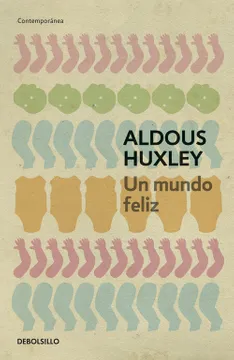

Formato: Libro físico
Autor: Aldous Huxley
Editorial: Debolsillo
Categoría: Literatura
Año: 2003
Idioma: Español
N°páginas: 256
Encuadernación: Tapa blanda
Precio de venta: $8.640
DESCRIPCIÓN
Esta novela describe un mundo futurista, utópico, altamente regulado y tecnológico. Arranca con la visita por parte de un grupo de estudiantes al Centro de Incubación y Condicionamiento de Londres. Allí, el director de la fábrica explica a los jóvenes cómo se divide a la población, ya desde su incubación. Así, según su condición genética, previamente alterada, la sociedad se divide desde los Alpha hasta los Epsilon, de mayor a menor inteligencia. En este recorrido, los estudiantes también conocen cómo eran las cosas antes de este nuevo orden mundial, antes de que una guerra y una gran crisis económica terminara por destruirlo. Después, en la segunda parte del libro, los protagonistas Bernard Marx y Lenina (alusión a Karl Marx y Lenin) visitan la ‘reserva salvaje’, cuyos habitantes son considerados retrógrados. Allí conocen a John, quien a pesar de crecer entre los indios fue concebido por ciudadanos del ‘Estado mundial’ o ‘Worldstate’, por lo que sabe leer y escribir. Los protagonistas deciden llevar a John, el salvaje, al ‘Estado mundial’ donde comienzan a surgir las comparaciones y a desenmascararse los puntos negativos de una sociedad aparentemente perfecta y feliz.